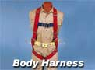
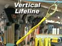
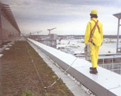

A personal fall arrest system is one option of protection that OSHA requires for workers on construction sites who are exposed to vertical drops of 6 feet or more.
|
Click on any of the components of the personal fall arrest system illustrated below for descriptions and provisions required by OSHA. |
||||||
|  |  | |||||
|
||||||
Using Fall Arrest Systems Safely
|  |
| This worker is protected by a properly constructed fall arrest system. |
-
Ensure
that personal fall arrest systems will, when stopping a fall:
- Limit maximum arresting force to 1,800 pounds.
- Be rigged such that an employee can neither free fall more than 6 feet nor contact any lower level.
- Bring an employee to a complete stop and limit maximum deceleration distance to 3� feet.
- Have sufficient strength to withstand twice the potential impact energy of a worker free falling a distance of 6 feet, or the free fall distance permitted by the system, whichever is less
- Remove systems and components from service immediately if they have been subjected to fall impact, until inspected by a competent person and deemed undamaged and suitable for use.
- Promptly rescue employees in the event of a fall, or assure that they are able to rescue themselves.
- Inspect systems before each use for wear, damage, and other deterioration, and remove defective components from service.
- Do not attach fall arrest systems to guardrail systems or hoists.
- Rig fall arrest systems to allow movement of the worker only as far as the edge of the walking/working surface, when used at hoist areas.